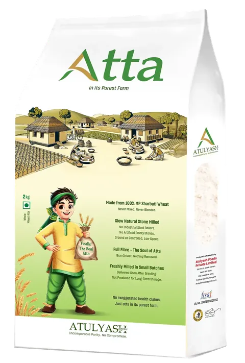

Concept image
Concept image

Atta in its purest form
Ours is milled slowly on natural stone. Fresh, every week.
See packs and prices
Freshly milledDelivered weekly
Concept image
Ours is milled slowly on natural stone. Fresh, every week.
See packs and prices
We keep changing everything around us. Our skincare, our cooking oil, even our utensils, because we research what is best for our family. So why don't we stop and think about our atta? Its quality, where it comes from, how it is made. We just take their word for it.
Isse kisi ne poocha?